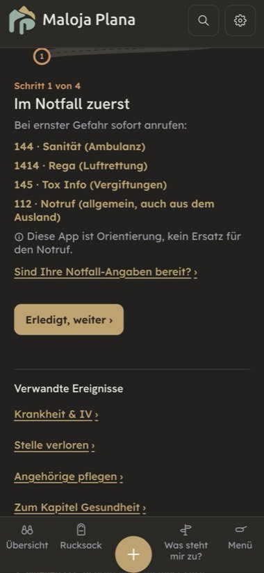
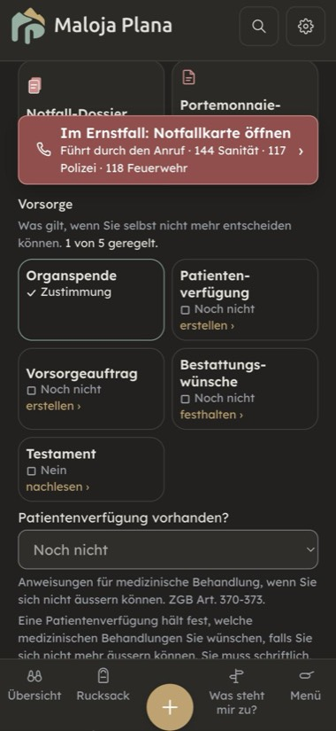

Durchgang 10.11.2026 auf main 991aff7c. Vierzehn Seiten: die Kapitelseite (Ernstfall-Knopf, Krisennummern, Notfall-Unterlagen, Block «Vorsorge», Angaben) und dreizehn weitere. Das sind Notfallkarte, Notfallpass, Arztkoffer, Vorsorgeauftrag & Patientenverfügung (Ablauf mit Vorlage), Patientenverfügung erstellen, Bestattungswünsche, Organspende, der Rechner KVG-Leistungen & Franchise, der Krankenkassenkarten-Scanner, die Abläufe Unfall oder Krankheit, Krankheit & IV und Angehörige pflegen sowie die Erklärseite «Warum die Krankenkasse so viel kostet». Gemessen im Browser auf einem eigenen Server aus diesem Arbeitsbaum (375 px, Beispiel «Maria Muster»). Fachprüfung in zwei Teilen am Fedlex-Volltext: Rechtsaussagen (rechts-pruefer; ZGB in den Fassungen 1.7.2026 und 1.1.2027, KVG, OR, IVG, AHVG, ATSG, VVK, TxG, dazu die BAG-Seite zur Organspende) und Zahlen und Fristen (swiss-precision-pruefer). Kernstellen von Hand am Volltext nachgelesen (ZGB Art. 361 und 374) und im Code bestätigt (vorsorgeauftrag.js:81, de.js:773, de.js:6104). Sprachprüfung über 917 Texte in fünf Sprachen. Gebaut ist nichts.
Gut: Das heikelste Stück stimmt. Die App erklärt die Form des Vorsorgeauftrags richtig (von Hand, datiert, unterzeichnet oder öffentlich beurkundet, ZGB Art. 361) und erzeugt nur eine «Vorlage zum Abschreiben» mit dem Warnsatz «kein Vorsorgeauftrag – auch nicht mit Unterschrift». Die Patientenverfügung ist richtig beschrieben: schriftlich, datiert, unterzeichnet; Hinweis auf der Versichertenkarte (Art. 371, VVK Art. 6); Grenzen der Verbindlichkeit (Art. 372); Konkubinat in der Vertretungsreihe (Art. 378 Ziff. 4). Organspende: Es gilt noch die erweiterte Zustimmungslösung, die Widerspruchslösung tritt laut BAG voraussichtlich im ersten Halbjahr 2028 in Kraft, und so steht es in der App. Ein eingestelltes Register nennt sie nicht. Die ZGB-Artikel 360–381 sind in der Fassung ab 1.1.2027 wortgleich, darum stimmen die Prüfvermerke. «Bleibt auf dem Gerät» ist am Code belegt (CSP connect-src 'self', kein fetch in src). Der Notfallpass sagt ehrlich, dass Angaben auf dem Sperrbildschirm für alle lesbar sind.
| # | Seite | Befund | Empfehlung |
|---|---|---|---|
| L1 | Vorsorgeauftrag (Vorlage) | Die Vorlage zum Abschreiben druckt unter dem Text Linien für «Ort, Datum» und «Unterschrift» (data/vorsorgeauftrag.js:81-82). Ein unterschriebener Ausdruck ist formungültig: Der Vorsorgeauftrag muss «von Anfang bis Ende von Hand niederzuschreiben, zu datieren und zu unterzeichnen» sein (ZGB Art. 361 Abs. 2). Der Warnkasten sagt das richtig, die Linien laden aber genau zu diesem Fehler ein. Der Fehler fällt erst auf, wenn die Person urteilsunfähig ist, also wenn er sich nicht mehr beheben lässt. | Die Linien weglassen. An ihrer Stelle der Satz: «Ort, Datum und Unterschrift — von Hand auf Ihrer Abschrift, nicht auf diesem Blatt.» Mit Test: Das Druck-HTML enthält keine Unterschriftslinie. |
| L2 | Vorsorgeauftrag | Vertretung durch den Ehegatten zu eng: Die App nennt nur «im gemeinsamen Haushalt». Nach ZGB Art. 374 Abs. 1 genügt auch, dass er oder sie «regelmässig und persönlich Beistand leistet», und das Recht gilt nur, «wenn weder ein Vorsorgeauftrag noch eine entsprechende Beistandschaft besteht». Der häufige Fall, ein Ehegatte im Pflegeheim, ist nach dem App-Text nicht vertreten, nach dem Gesetz schon. Die zweite Bedingung fehlt ganz (vorsorgeauftrag.step1Text). | «… einen gemeinsamen Haushalt führen oder er oder sie Ihnen regelmässig und persönlich Beistand leistet, … sofern kein Vorsorgeauftrag und keine entsprechende Beistandschaft besteht (ZGB Art. 374).» |
| L3 | Patientenverfügung | Psychiatrie: «… gelten zusätzlich die Regeln der fürsorgerischen Unterbringung» (pv.ui.einstiegPsych). Nach ZGB Art. 380 richtet sich die Behandlung nach diesen Regeln, und die Patientenverfügung ist dort nur «zu berücksichtigen» (Art. 433 Abs. 3). Wer eine Behandlung ablehnt, hält das sonst für bindend. | «In einer psychiatrischen Klinik gelten die Regeln der fürsorgerischen Unterbringung; die Patientenverfügung wird dort berücksichtigt, ist aber nicht in jedem Fall bindend (ZGB Art. 380, 433).» |
| L4 | KVG-Leistungen | Spital: «allgemeine Abteilung im Wohnkanton» (kvg.spitalAllgNote). Nach KVG Art. 41 Abs. 1bis gilt die freie Wahl unter den Listenspitälern des Wohn- oder des Standortkantons; bezahlt wird höchstens der Tarif des Wohnkantons. | «Allgemeine Abteilung in einem Listenspital, auch ausserkantonal; bezahlt wird höchstens nach dem Tarif des Wohnkantons (KVG Art. 41 Abs. 1bis).» |
| L5 | KVG-Leistungen | «Die Franchise ist Ihr jährlicher Selbstbehalt. Danach zahlen Sie 10 %» (kvg.franchiseExplain, de.js:6104). Franchise und Selbstbehalt sind zwei Teile der Kostenbeteiligung (KVG Art. 64 Abs. 2): ein fester Jahresbetrag und danach ein Anteil. Wer den Satz liest, rechnet die Franchise doppelt oder gar nicht. Dazu nennt er pauschal «max. CHF 700»; für Kinder gilt die Hälfte, 350 Franken (KVG Art. 64 Abs. 4, KVV Art. 103 Abs. 2). | «Die Franchise zahlen Sie jedes Jahr zuerst selbst. Danach zahlen Sie 10 % der Kosten als Selbstbehalt, höchstens 700 Franken, für Kinder 350 (KVG Art. 64).» |
| L6 | Krankheit & IV | Der Rechtsweg fehlt. Die App sagt nichts Falsches, aber nicht, wie man sich wehrt: Einwände gegen den Vorbescheid innert 30 Tagen (IVG Art. 57a Abs. 3), gegen die Verfügung direkt Beschwerde ans kantonale Versicherungsgericht, keine Einsprache (IVG Art. 69 Abs. 1 Bst. a). Wer «Einsprache» aus den anderen Versicherungen kennt, wählt den falschen Weg. | Einen Schritt «Vorbescheid erhalten» ergänzen, mit Frist-Knopf 30 Tage. |
| L7 | Angehörige pflegen | Unter der Überschrift «Betreuungsentschädigung (EO)» steht «Auch kurze Urlaube für erwachsene Angehörige sind möglich» (pflege.step2Text). Das ist keine EO-Leistung, sondern bezahlter Urlaub durch den Arbeitgeber: höchstens drei Tage je Ereignis und zehn Tage im Jahr (OR Art. 329h). Wer bei der Ausgleichskasse fragt, bekommt nichts. | Eigener Satz mit OR Art. 329h, nicht unter EO. |
| L8 | KVG-Leistungen | Mutterschaft: «Keine Franchise und kein Selbstbehalt auf Mutterschaftsleistungen — ab der 13. Schwangerschaftswoche bis 8 Wochen nach der Geburt» (kvg.schwangerschaftDetail2), an zwei weiteren Stellen nur «franchisefrei». KVG Art. 64 Abs. 7 hat zwei Teile: Die Mutterschaftsleistungen selbst (Kontrollen, Geburt, Stillberatung, Art. 29 Abs. 2) sind während der ganzen Schwangerschaft frei von jeder Kostenbeteiligung (Bst. a). Das Fenster ab der 13. Woche gilt für die übrigen Leistungen bei Krankheit (Bst. b). Wer früh schwanger ist, meint sonst, die Kontrollen kosten Franchise. | Zwei Sätze nach Bst. a und b; «franchisefrei» durch «ohne Franchise und Selbstbehalt» ersetzen; Quelle KVG Art. 64 Abs. 7. |
| L9 | KVG-Leistungen | «Selbstbehalt ausgeschöpft — ab jetzt zahlt die Kasse 100 %» (kvg.selbstbehaltDone). Es bleiben 15 Franken je Spitaltag (KVV Art. 104) und bei gewissen Medikamenten der höhere Selbstbehalt von 40 % (KLV Art. 38a), der nur zur Hälfte ans Maximum zählt (KVV Art. 104a Abs. 2). Die Erklärseite zur Krankenkasse sagt es richtig. | «Ab jetzt zahlt die Kasse die übrigen Kosten der Grundversicherung, ausser 15 Franken je Spitaltag und dem höheren Selbstbehalt bei gewissen Medikamenten.» |
| L10 | KVG-Leistungen (Rechner) | Der Franchise-Rechner kennt nur Erwachsene: Auswahl 300–2500, Höchstbetrag immer 700 (KVGLeistungen.jsx:281-283, :377). Eine gespeicherte Kinderfranchise (0–600) wird stillschweigend zu 300. Für ein Kind zeigt der Rechner damit falsche Beträge und ein zu grosses «Polster». Nachgerechnet: Für Erwachsene stimmt er (5000 Fr. Kosten, Franchise 300 → 770 selbst, 2500 → 2750). | Kind/Erwachsen wählbar (oder aus dem Geburtsdatum), Stufen und Höchstbetrag 350 für Kinder; unbekannte Werte nicht still ersetzen, sondern nachfragen. |
| K | verschiedene | Kleiner: Vorsorgeauftrag: Wer ihn errichten kann: «handlungsfähig» (Art. 360), also auch nicht unter umfassender Beistandschaft, nicht nur «ab 18 und urteilsfähig» ( va.ui.intro, va.begleit.alter) · Kündigung durch die beauftragte Person: zwei Monate, schriftlich an die KESB, aus wichtigen Gründen sofort (Art. 367) · Vertretungsreihe ohne Patientenverfügung beginnt mit der im Vorsorgeauftrag bezeichneten Person und dem Beistand, und sie gilt auch, wenn die Verfügung zu einer Frage schweigt (Art. 378 Abs. 1 und 3).KVG-Leistungen: Zahnbehandlung «NICHT durch die KVG gedeckt» gilt «in der Regel», nicht bei schweren Erkrankungen (KVG Art. 31) · «Recht auf Zweitmeinung» steht so nicht im KVG, nicht belegt · Psychotherapie im Anordnungsmodell «seit 2023»: seit 1. Juli 2022 (KLV Art. 11b, AS 2021 440), höchstens 15 Sitzungen je Anordnung, in allen fünf Sprachen · «Impfplan 2025»: KLV Art. 12a verweist auf die Fassung vom 1.7.2026 · Vorsorge: «Gynäkologie ab 21» steht nicht in der KLV (Art. 12e: die ersten zwei Untersuchungen im Jahresabstand, dann alle drei Jahre), Mammografie ohne Obergrenze 74, Darmkrebs auch Stuhltest alle zwei Jahre · Komplementärmedizin und Akupunktur: verlangt ist ein Fähigkeitsprogramm (KLV Art. 4b), nicht «FMH-Arzt». Organspende: Mindestalter 16 für eine Erklärung fehlt (TxG Art. 8). Pflege: Betreuungsgutschrift: Personenkreis wörtlich nach AHVG Art. 29septies Abs. 1 (Verwandte auf- und absteigend, Geschwister, Ehegatten, Schwiegereltern, Stiefkinder, Lebenspartner nach fünf Jahren), nicht «nahe Angehörige». Arztkoffer: Vier Kacheln «Bald im Koffer · In Vorbereitung» (Fieberthermometer, Wochenblister, Karteikarten, Impfausweis) versprechen Werkzeuge, die es nicht gibt. Kapitelseite: Block «Vorsorge» zählt das Testament mit (Kapitel 6), «1 von 5 geregelt» steht neben «19 von 20» im Bereitschaftsbalken · unter «Drei Szenarien» steht «Behördengang» · Zusammenfassung «Ein Hausarzt ist eingetragen» bei «Dr. med. Lisa Brunner» (S2). Nicht belegt in diesem Durchgang: Notruf- und Krisennummern (144, 117, 118, 1414, 145, 112, 143, 147; Bundestext nicht geladen) · Medikamentenpreise aus der Spezialitätenliste vom 6.10.2026 ( data/medikamentPreise.js, ob es einen neueren Stand gibt) · Brillen für Kinder (MiGeL nicht geladen) · Pflegelohn 30–40 Fr. (Quelle Medienmitteilung Basel-Stadt) · Prämien 2027 der Erklärseite nur auf innere Stimmigkeit geprüft (Rechnungen gehen auf; 15 Fr. Spitalbeitrag, 7 % Prämienreduktion, 55 % Kantonsanteil am Volltext bestätigt) · Meldepflicht Unfall (UVG Art. 45) und AHVV Art. 52g nicht am Volltext gelesen.
| Ergänzen oder belegen. |


#/notfallvorsorge landen richtig darunter. Absätze über 600 Zeichen: Unfall Schritt 2 (674), Vorsorgeauftrag Schritt 4 (667) und 6 (612) → teilen.| # | Befund | Empfehlung |
|---|---|---|
| S1 | Rätoromanisch: 53 von 917 Texten sind deutsch, die ganze Seite Unfall oder Krankheit (27 von 27, auch der Notruf-Schritt) und Vorsorgeauftrag (18 von 25). Halber Satz in vorsorgeauftrag.footerNote (rm-Anfang, deutscher Rest). Auf der Notfallkarte fehlen in rm sieben Sie-Formen; wer «Sie» gewählt hat, liest im Ernstfall «ti». | Halben Satz und die sieben Sie-Formen der Notfallkarte zuerst; die Übersetzung braucht eine Person, die Romanisch schreibt. |
| S2 | Generisches Maskulin in 12 de-Texten: «Hausarzt», «Telefon Arzt», «Arbeitgeber» (Unfall 5×, IV), «Zahnarzt», «Augenarzt», «FMH-Arzt», «Ehegatte». Die Zusammenfassung sagt «Ein Hausarzt ist eingetragen» bei einer Ärztin. fr 11 («médecin de famille», «employeur»), it rund 20 («il medico», «il datore di lavoro»). In pv.* und vorsorgeauftrag.* sauber («Ärztin oder Arzt»). | Doppelform oder «Hausarztpraxis», «Arbeitgebende». |
| S3 | Gesetzesangaben mitten im Satz: 70 Verweise in 44 Texten, bis sechs Klammern je Text (Vorsorgeauftrag Schritt 6, Unfall Schritt 2). | Wie Kapitel 1–6: ans Satzende, höchstens einer je Satz. |
| S4 | Kürzel unerklärt: KESB 7× (einmal erklärt), IV 12×, BAG 9×, KLV, KVV, UVV, FMH, ZGB 51×. en lässt deutsche Kürzel stehen (KVG 10, IVG 7, ZGB 21, KESB 4). | Beim ersten Vorkommen je Seite ausschreiben, en mit englischem Namen. |
| S5 | Beschwichtigen: «Hier der ruhige Überblick» in vier Intros (Unfall, Vorsorgeauftrag, IV, Pflege), auch fr/it/en («calm overview»). Auf der Notfallkarte «Bleiben Sie ruhig.» (de.js:5651) und «das ist ok» bei verweigertem Standort. | Streichen; auf der Notfallkarte direkt «Sagen Sie es der Reihe nach:». |
| S6 | Mehrere Namen: Kapitel «Gesundheit» (Schlüssel notfall) / Elternstufe «Notfall» in der Brotkrume von Notfallkarte und Notfallpass / «Arztkoffer» («Your health case», «Trousse santé»); «Notfallkarte» / «Vorlesekarte» / «Notfall-Unterlagen» / «Notfall-Dossier» / «Portemonnaie-Karte»; «Vorsorge» für Altersvorsorge und für Verfügungen; «Bestattungswünsche» / «Bestattungsvorsorge». it nennt den Pass «Scheda medica d’emergenza» und «passaporto d’emergenza». | Ein Name je Sache: Kapitel und Brotkrume «Gesundheit», «Notfallkarte», «Bestattungswünsche»; «Vorsorge» im Kapitel 7 als «Verfügungen». |
| S7 | Klein: «urteilsunfähig» 14×, «Franchise», «Selbstbehalt», «Hilflosenentschädigung», «Früherfassung», «Pflichtteil» nie erklärt · «z.B.» neben «z. B.» · gerade und typografische Apostrophe gemischt in fr/it/rm/en · en «patient decree» (Fedlex-Englisch) neben «advance directive». Anrede Sie/du in de/fr/it sauber. | Fachwörter beim ersten Vorkommen in einem Halbsatz erklären. |
main. L1 zuerst, mit Test (die Vorsorgeauftrag-Vorlage druckt keine Unterschriftslinie mehr). Danach die KVG-Sätze L4, L5, L8, L9 und L10 zusammen, weil sie dieselbe Seite und dieselben Zahlen betreffen (Rechner mit Test für Kind und Erwachsen), dann L2, L3, L6 und L7. A bringt die Gesundheits-Seiten auf die Kapitelseite und muss das Startbündel nicht berühren (Kapitelseite und Arztkoffer sind nachgeladen), B macht die Notrufnummern zu Knöpfen. Jeder neue Fachsatz vor «fertig» durch den rechts-pruefer am Volltext. Rätoromanisch: nur der halbe Satz und die sieben Sie-Formen der Notfallkarte. Offen für einen Menschen: die nicht belegten Nummern und Preise einmal an der Quelle ansehen.